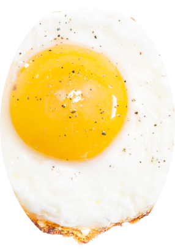
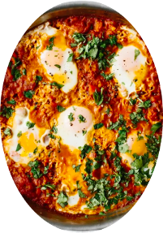
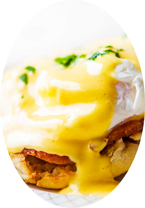
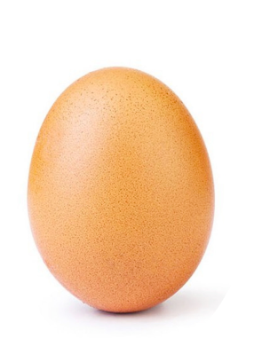

Fill a medium-sized saucepan with about 2 to 3 inches of water. Place it over medium-high heat and bring the water to a gentle simmer. The water should be hot but not boiling vigorously.
If desired, add a teaspoon of vinegar to the water. Vinegar helps coagulate the egg whites faster, resulting in a neater poached egg. However, it's optional and can be skipped if you don't prefer the taste of vinegar.
Crack a fresh egg into a small bowl or ramekin. This will make it easier to slide the egg into the simmering water without breaking the yolk.
Use a spoon to create a gentle whirlpool in the simmering water. This swirling motion will help the egg white wrap around the yolk, giving your poached egg a neat shape.
Carefully slide the egg from the bowl or ramekin into the center of the whirlpool. The swirling water will help the egg white fold around the yolk, creating a rounded shape.
Set a timer for 3 to 4 minutes for a soft-poached egg with a runny yolk. Adjust the timing based on your preference for yolk consistency. For a firmer yolk, poach the egg for 5 to 6 minutes.
While the egg is poaching, prepare a plate or bowl lined with paper towels or a kitchen towel. This will help absorb excess water when you remove the poached egg from the simmering water.
Using a slotted spoon, carefully lift the poached egg from the water, allowing any excess water to drain away.
Place the poached egg on the prepared plate or bowl lined with paper towels or a kitchen towel. Gently pat the top of the egg with another paper towel to absorb any remaining water.
Season the poached egg with salt and pepper to taste.
Repeat the process for additional eggs, if desired.
Crack the eggs into a medium-sized bowl and whisk them until the yolks and whites are fully combined. Season with salt and pepper to taste. Whisking the eggs well will result in a fluffy and uniform texture.
Place a non-stick skillet or frying pan over medium heat and add the butter. Allow it to melt and coat the bottom of the pan evenly.
Once the butter has melted and starts to sizzle slightly, pour the whisked eggs into the pan. Let them sit undisturbed for about 10-15 seconds to allow the bottom layer to begin cooking.
Using a spatula, gently push the cooked edges of the eggs towards the center of the pan, allowing the uncooked eggs to flow to the edges. Repeat this process every 10-15 seconds, moving around the pan, until the eggs are mostly cooked but still slightly runny.
If desired, this is the time to add any optional toppings, such as shredded cheese, chopped herbs, or diced vegetables. Sprinkle them evenly over the eggs in the pan.
Continue to cook the eggs for another 1-2 minutes, gently folding them with the spatula until they reach your desired level of doneness. Be careful not to overcook the eggs, as they can become dry.
Once the scrambled eggs are cooked to your liking, remove the pan from the heat. Transfer the eggs to a plate or serving dish immediately to prevent them from cooking further in the residual heat of the pan.
Serve the scrambled eggs hot, garnished with additional salt, pepper, or your favorite toppings. They can be enjoyed on their own, with toast, or as part of a larger breakfast or brunch spread.

Fried Eggs
Ingredients:
Eggs (as many as desired)
Salt and pepper to taste
Cooking oil or butter
Equipment:
Non-stick skillet or frying pan
Spatula
Kitchen timer (optional)
Recipe:
Place a non-stick skillet or frying pan over medium heat. Add a small amount of cooking oil or butter to coat the bottom of the pan. Allow it to heat up for a minute or two.
Crack the eggs into a bowl, one at a time, ensuring not to break the yolks. This allows you to check the freshness and separate any shell fragments if needed.
Gently slide the eggs from the bowl into the heated pan, taking care not to break the yolks. If you prefer, you can crack the eggs directly into the pan.
Season the eggs with salt and pepper to taste. You can sprinkle the seasonings directly on top of the eggs or add them later during the cooking process.
Cook the eggs undisturbed for a few minutes until the whites start to set and become opaque. For over-easy or over-medium eggs, cover the pan with a lid for a minute or two to allow the steam to cook the top of the eggs.
If desired, you can flip the eggs gently using a spatula to cook the other side. This is common for over-easy or over-medium eggs. Be careful not to break the yolks if you prefer them runny.
Continue cooking the eggs until they reach your desired level of doneness. For sunny-side-up eggs, cook them until the whites are fully set, but the yolks are still runny. For over-easy or over-medium eggs, cook them until the yolks are partially or fully set, depending on your preference.
Once the eggs are cooked to your liking, use a spatula to carefully remove them from the pan and transfer them to a plate. Take care not to break the yolks.
Serve the fried eggs immediately while they are hot. They pair well with toast, bacon, sausage, or any other breakfast sides you enjoy.
Omelette Eggs
Ingredients:
3 large eggs
Salt and pepper to taste
2 tablespoons milk or water
1 tablespoon butter or cooking oil
Fillings of your choice (e.g., cheese, diced vegetables, cooked meats, herbs)
Equipment:
Medium-sized bowl
Whisk or fork
Non-stick skillet or frying pan
Spatula
Recipe:
Crack the eggs into a medium-sized bowl. Add salt, pepper, and milk (or water) to the eggs. Whisk the mixture until the yolks and whites are fully combined and the mixture becomes frothy. Whisking helps create a light and fluffy omelette.
Heat a non-stick skillet or frying pan over medium heat. Add butter (or cooking oil) and allow it to melt and coat the bottom of the pan evenly.
Once the butter has melted and starts to sizzle, pour the egg mixture into the pan. Let it sit undisturbed for a few seconds to allow the bottom to start cooking.
Using a spatula, gently push the cooked edges of the omelette toward the center, tilting the pan to let the uncooked egg mixture flow to the edges. Repeat this process around the omelette until it is mostly set but still slightly runny on top.
At this point, add your desired fillings to one half of the omelette. Sprinkle them evenly over the surface.
Using the spatula, carefully fold the empty half of the omelette over the side with the fillings, creating a half-moon shape. Press it gently to seal the omelette.
Cook the omelette for another 1-2 minutes to ensure the fillings heat through and any cheese melts. Adjust the heat if needed to prevent burning.
Once the omelette is cooked to your desired level of doneness, slide it onto a plate using the spatula, folding it in half if necessary.
Serve the omelette hot. You can garnish it with additional fillings, herbs, or a sprinkle of cheese if desired. Omelettes are versatile and can be enjoyed for breakfast, brunch, or any meal of the day.
Frittata Eggs
Ingredients:
8 large eggs
Salt and pepper to taste
1/4 cup milk or heavy cream
1 tablespoon olive oil
1 small onion, diced
1 bell pepper, diced
1 cup diced vegetables of your choice (e.g., mushrooms, zucchini, spinach)
1 cup cooked meat or protein (e.g., diced ham, cooked sausage, bacon)
1 cup shredded cheese of your choice (e.g., cheddar, mozzarella, feta)
Fresh herbs for garnish (e.g., parsley, basil, chives)
Equipment:
Large oven-safe skillet or frying pan
Whisk or fork
Spatula
Oven (preheated to 350°F/175°C)
Recipe:
Preheat your oven to 350°F (175°C) to prepare for baking the frittata.
In a large bowl, crack the eggs and whisk them until the yolks and whites are fully combined. Add salt, pepper, and milk (or heavy cream) to the eggs and whisk again to incorporate the ingredients. Set the egg mixture aside.
Heat the olive oil in a large oven-safe skillet or frying pan over medium heat. Add the diced onion and bell pepper, and sauté until they become soft and translucent, about 3-4 minutes.
Add the remaining diced vegetables of your choice to the skillet and sauté them until they are cooked and any excess moisture has evaporated. This will ensure the frittata doesn't become watery. If using leafy greens like spinach, wilt them before adding other vegetables.
If you're using any cooked meat or protein, add it to the skillet and heat it through for a minute or two.
Reduce the heat to low and pour the egg mixture over the sautéed vegetables and meat in the skillet. Use a spatula to distribute the ingredients evenly.
Sprinkle the shredded cheese evenly over the top of the egg mixture.
Allow the frittata to cook on the stovetop over low heat for about 5 minutes, or until the edges start to set.
Transfer the skillet to the preheated oven and bake the frittata for approximately 15-20 minutes, or until the eggs are fully set and the top is golden brown.
Remove the skillet from the oven (use oven mitts, as the handle will be hot) and let the frittata cool for a few minutes.
Garnish the frittata with fresh herbs, such as parsley, basil, or chives.
Slice the frittata into wedges and serve it warm. It can be enjoyed for breakfast, brunch, or as a satisfying main dish for any meal.

Shakshuka Eggs
Ingredients:
2 tablespoons olive oil
1 onion, thinly sliced
1 bell pepper, thinly sliced
2 cloves of garlic, minced
1 teaspoon ground cumin
1 teaspoon ground paprika
1/2 teaspoon ground cayenne pepper (adjust to taste)
1 can (400 grams) crushed tomatoes
Salt and pepper to taste
4-6 large eggs
Fresh herbs for garnish (e.g., parsley, cilantro)
Equipment:
Large skillet or frying pan with a lid
Wooden spoon or spatula
Recipe:
Heat the olive oil in a large skillet or frying pan over medium heat.
Add the thinly sliced onion and bell pepper to the skillet. Sauté them until they become soft and lightly caramelized, stirring occasionally, for about 5-7 minutes.
Add the minced garlic, ground cumin, ground paprika, and ground cayenne pepper to the skillet. Stir the spices with the onions and bell peppers for about 1-2 minutes until fragrant.
Pour in the crushed tomatoes and season with salt and pepper to taste. Stir well to combine all the ingredients. Reduce the heat to low and let the mixture simmer for about 10-15 minutes, allowing the flavors to meld together and the sauce to thicken slightly.
Create small wells in the tomato sauce using the back of a spoon or spatula. Crack the eggs one by one into each well. Season the eggs with salt and pepper.
Cover the skillet with a lid and let the shakshuka cook on low heat for about 8-10 minutes, or until the egg whites are set but the yolks are still slightly runny. Cook longer if you prefer your eggs more well-done.
Once the eggs are cooked to your liking, remove the skillet from the heat. Garnish the shakshuka with fresh herbs, such as parsley or cilantro.
Serve the shakshuka directly from the skillet. It pairs well with crusty bread or pita for dipping and soaking up the flavorful tomato sauce.

Eggs Benedict
Ingredients:
4 English muffins, split and toasted
8 slices Canadian bacon or ham
4 large eggs
Hollandaise sauce:
3 large egg yolks
1 tablespoon freshly squeezed lemon juice
1/2 cup unsalted butter, melted
Salt and pepper to taste
Chopped fresh chives or parsley for garnish (optional)
Equipment:
Saucepan
Whisk
Double boiler or heatproof bowl
Slotted spoon
Toaster or toaster oven
Recipe:
Fill a saucepan with water and bring it to a gentle simmer over medium heat. This will be used for poaching the eggs.
In the meantime, prepare the hollandaise sauce. In a heatproof bowl or the top of a double boiler, whisk together the egg yolks and lemon juice until well combined.
Place the bowl over a saucepan with simmering water, making sure the bottom of the bowl does not touch the water. Continue whisking the egg yolk mixture vigorously while slowly pouring in the melted butter. Keep whisking until the sauce thickens and becomes smooth.
Season the hollandaise sauce with salt and pepper to taste. Remove the bowl from the heat and set it aside, but keep it warm.
In a separate skillet, cook the Canadian bacon or ham slices over medium heat until they are heated through and lightly browned. Remove them from the skillet and set them aside.
Now it's time to poach the eggs. Crack one egg into a small bowl or ramekin. Create a gentle whirlpool in the simmering water using a spoon, then carefully slide the egg into the center of the whirlpool. Repeat this process for the remaining eggs.
Poach the eggs for about 3-4 minutes, or until the whites are set but the yolks are still runny. Use a slotted spoon to carefully remove each poached egg from the water, allowing any excess water to drain off.
Assemble the Eggs Benedict by placing a slice of Canadian bacon or ham on each toasted English muffin half.
Carefully place a poached egg on top of the bacon or ham on each muffin half.
Spoon the hollandaise sauce generously over each poached egg.
Garnish the Eggs Benedict with chopped fresh chives or parsley, if desired.
Serve the Eggs Benedict immediately while still warm. They pair well with a side of sautéed spinach, roasted potatoes, or a fresh salad.

Boiled Eggs
Ingredients:
Eggs (as many as desired)
Water
Salt (optional)
Equipment:
Saucepan
Slotted spoon
Timer or clock
Recipe:
Place the eggs in a single layer at the bottom of a saucepan. Make sure the saucepan is large enough to hold the eggs in a single layer without crowding.
Add enough water to the saucepan to cover the eggs by about an inch (2.5 cm). This will ensure that the eggs are fully submerged during cooking.
Optional: If desired, add a pinch of salt to the water. This can help prevent the eggs from cracking and make them easier to peel later on.
Place the saucepan on the stovetop and turn the heat to high. Bring the water to a boil.
Once the water reaches a rolling boil, reduce the heat to medium-low to maintain a gentle simmer. Let the eggs simmer for the desired doneness:
Soft-boiled eggs: Simmer for about 4-5 minutes.
Medium-boiled eggs: Simmer for about 6-7 minutes.
Hard-boiled eggs: Simmer for about 9-12 minutes.
While the eggs are simmering, prepare a bowl of ice water. This will be used to cool the eggs quickly and stop the cooking process.
Once the eggs are cooked to your desired level, use a slotted spoon to carefully transfer them to the bowl of ice water. Let them sit in the ice water for about 5 minutes to cool down completely.
After the eggs have cooled, gently tap each egg on a hard surface to crack the shell. Roll the egg between your hands to loosen the shell.
Peel the shell off the eggs, starting from the wider end where the air pocket is located. If the shell is difficult to remove, you can peel the eggs under a slow stream of running water to help remove any stubborn shell pieces.
Once peeled, the boiled eggs are ready to be enjoyed as a snack, used in salads, or incorporated into various recipes.